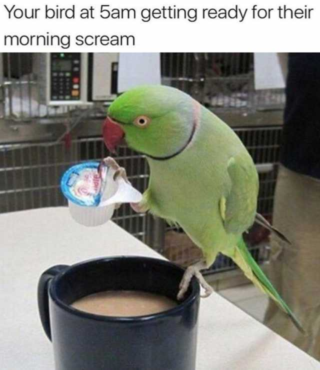

Papuszki

Witajcie miłośnicy papużek! Ta strona powstała po to, aby zebrać najważniejsze informacje o papużkach. Przeczytajcie ją uważnie i szerzcie swoją wiedzę pośród ornitologicznych ignorantów!
Co to są papuszki?
Jest to rząd ptaków o przeważnie fajnych kolorkach i innych ciekawych właściwościach. Obiekt odwiecznej ludzkiej zazdrości. Nic dziwnego – papugi to najpiękniejsze, najmądrzejsze i w ogóle najlepsze zwierzęta na świecie.
Papugi są z reguły roślinożerne, ale lubią także np. owady. Ponadto odgryzają tylko głowę mrówce. W domu szybko przyzwyczajają się do jedzenia kartek, długopisów, ołówków, gumek, tapet, kabli od padów, książek, krążków od hokeja itp. Ponadto każda papuga jest zazdrosna o opiekuna i staje się zaborcza; potrafi śmiać się perfidnie z drugiej. Jeśli opiekun nie spełnia zachcianek papugi, ta się na niego obrazi i się odwraca plecami. Lubią się panoszyć i asystować przy kąpieli. No i wszystkie równo defekują się po domu, ale odchody ary znacznie różnią się wielkością od wydalin papużki falistej.

Gatunki papużek
- Papużka falista
– latają stada takich zielonych po Australii, w pozostałych rejonach świata przybierają różne kolory. Nawet czarny. W dodatku niektóre potrafią przeklinać lepiej niż niejeden dresiarz. Niektórzy twierdzą, iż są to farbowane wróble. Potrafią się także niezwykle głośno wydzierać. Nie musisz nawet nastawiać budzika.
- Nimfa
– kakadu-niekakadu, ma opinię niemrawej i bardzo leniwej. Nierzadko szkolą ludzi, aby ci służyli im za domowe środki lokomocji, gdyż same są zbyt leniwe, aby fruwać. Jeśli uda im się zejść na głowę, wycierają o nią swój kuper, tworząc właścicielowi z fryzury siano.
- Rozelle
– dość płochliwe, ale i agresywne ptaki. Ich agresywną inwazję widać na załączonym filmiku.
- Kakadu
– różne rozmiary i kolory. Mają czub na główce i na tym się kończy przeważnie nasza wiedza o nich. Niektóre sabotują uprawy w Australii i przypominają anioły, inne (np. żałobnica palmowa) wyglądają jak pół diabła.
- Kakapo
– wielka, nielotna papuga z Nowej Zelandii. Konkurent sów.
- Kea
– i niech ktoś powie, że papugi to ziarnojady i ptaki ciepłolubne. Na przekąskę zjada owce. Nie boi się ludzi, toteż będąc w Nowej Zelandii nie zdziw się, gdy podczas biwakowania pod namiotem nawiedzi cię zwiad kilku tych papug. A w śniegu to się tarza.
- Kaka
– kuzynka kei, żywi się kwiatami. Dobrze gra w nogę. Jest trochę rudawa i również żyje na Nowej Zelandii, w gęstych lasach. Z rodziny dwóch powyższych. Był jeszcze jeden gatunek, ale już dawno wymarły.
- Żako
– z Afryki, szare ubarwienie, czerwony ogon. Ajnsztajny wśród ptactwa. Da się ją nauczyć korzystać z WC, a klatkę trzeba zamykać kłódką, gdyż szybko się uczy ją otwierać.
- Ara
– wielkie, agresywne. Są również mniejsze gatunki, wielkości żako, też potrafiące dotkliwie podziobać. Dziobem może konkurować z bocianem. Największa ara hiacyntowa może ważyć nawet 5 kilogramów, więc nie polecamy uczyć jej siadać na głowie. Wsadzanie palca do dzioba również niewskazane.
- Nierozłączka
– przywiązuje się do drugiej nierozłączki na stałe, a jeśli jest hodowana samotnie, to do opiekuna i już trzeba chodzić do roboty z papugą na ramieniu.
- Norweska Błękitna
– ma piękne, niebieskie upierzenie. Charakteryzuje się też tym, że jej już nie ma, dokonała żywota, kopnęła w kalendarz i spotkała się za swoim stwórcą, tym, że dołączyła do grona aniołków, jest świętej pamięci papugą a oraz tym, że zesztywniała, wyzionęła ducha, a gdyby sprzedawca jej nie przybił do żerdzi, wąchałaby kwiatki od spodu. Znana z debilnego skeczu o papudze Monty Pythona. Niestety, przez występ w takim idiotyzmie dostała ataku serca, co spowodowało, że członkowie wspomnianej powyżej grupy postanowili wystąpić z trupem.
- Modrolotka
– zielonożółte małe coś, z czerwonym lub żółtym czołem. Cholernie wkurzająca. Godna zastępczyni budzika. Potocznie zwana kozą (z przyczyn niewiadomych, jednak przypuszcza się, że nie gardzi ludzkimi kozami z nosa). Mała popierdółka, która powinna występować w filmach jako kaskaderka, dzięki umiejętności włażenia gdzie się da (lodówka, śmietnik, kibel, szafa lub wszelkie inne dziury na terenie domu).
Co wspólnego mają papugi i birb memes?
Odpowiedź brzmi - wszystko! Papuszki to wyjątkowo memiczne stworzenia, które lubią robić super rzeczy, żeby potem powstały z nich memy. Najbardziej memiczne są cockatiele i kakadu, bo mają śmieszne czubki i dużo krzyczą.